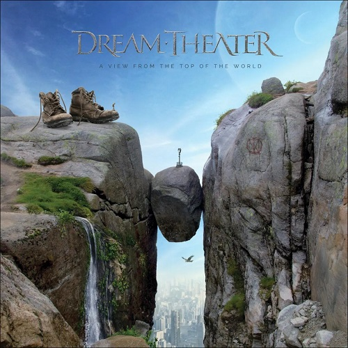

Metal Hammer
Fundada em 1983 a Metal Hammer é uma revista mensal que circula no Reino Unido e na Irlanda, e sob uma outra editora, em outros países da Europa. A revista foca em bandas de heavy metal, conhecidas ou não. É a segunda revista mais vendida no Reino Unido, atrás da Kerrang!, e é geralmente tida como mais underground, embora ultimamente tenha se voltado mais para as bandas que estão na mídia. Metal Hammer é publicada atualmente pela editora Future. A tiragem é de 20 mil cópias mensais.
A lista de melhores do ano da revista, como sempre, traz inúmeras bandas que são pouco faladas aqui no Brasil, o que a torna uma ótima fonte de pesquisa para novos sons. Abaixo você confere quais foram os melhores álbuns de 2021 na opinião da Metal Hammer:
50 Dream Theater – A View From the Top of the World 
49 Whitechapel – Kin

48 Ophidian I – Desolate

47 The Body and Big | Brave – Leaving None But Small Birds

46 Cradle of Filth – Existence is Futile

45 Dordeduh – Har

44 Times of Grace – Songs of Loss and Separation

43 Pupil Slicer – Mirrors

42 KK’s Priest – Sermons of the Sinner
41 Powerwolf – Call of the Wild

40 Perturbator – Lustful Sacraments

39 Boss Keloid – Family the Smiling Thrush

38 Dvne – Etemen Ænka
37 Divide and Dissolve – Gas Lit

36 The Armed – Ultrapop

35 Between the Buried and Me – Colors II

34 Cannibal Corpse – Violence Unimagined
33 Jinjer – Wallflowers

32 Every Time I Die – Radical

31 The Wildhearts – 21st Century Love Songs

30 King Woman – Celestial Blues
29 Cynic – Ascension Codes
28 Full of Hell – Garden of Burning Apparitions
27 Backxwash – I Lie Here Buried with My Rings and My Dresses
26 Swallow the Sun – Moonflowers
25 Amenra – De Doom
24 Deafheaven – Infinite Granite
23 While She Sleeps – Sleeps Society
22 Lingua Ignota – Sinner Get Ready
21 Tribulation – Where the Gloom Becomes Sound
20 Wardruna – Kvitravn
>
19 Helloween – Helloween
18 Urne – Serpent & Spirit
17 At the Gates – The Nightmare of Being
16 Wolves in the Throne Room – Primordial Arcana
15 Carcass – Torn Arteries
14 Sleep Token – This Place Will Become Your Tomb
13 Architects – For Those That Wish to Exist
12 Turnstile – Glow On
>
11 Ruins of Beverast – The Thule Grimoires
10 Unto Others – Strength
9 MØL - Diorama
"Albúm">
8 Rivers of Nihil – The Work
7 Converge & Chelsea Wolf – Bloodmoon: I
6 Mastodon – Hushed and Grim
5 Spiritbox – Eternal Blue
4 Employed to Serve – Conquering
3 Iron Maiden – Senjutsu
2 Trivium – In the Court of the Dragon
1 Gojira - Fortitude>